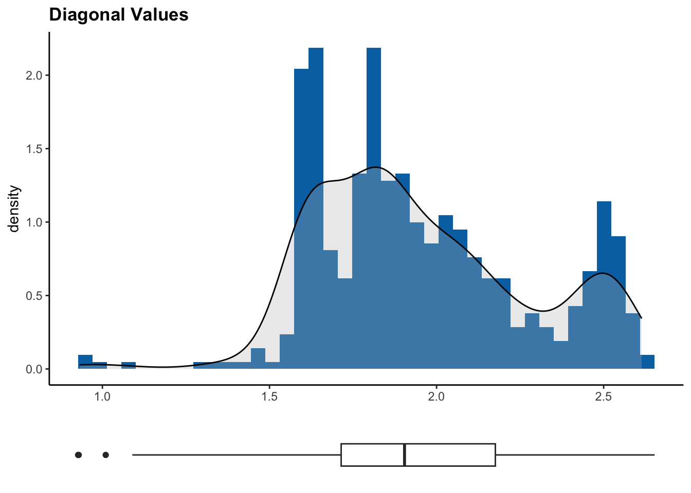
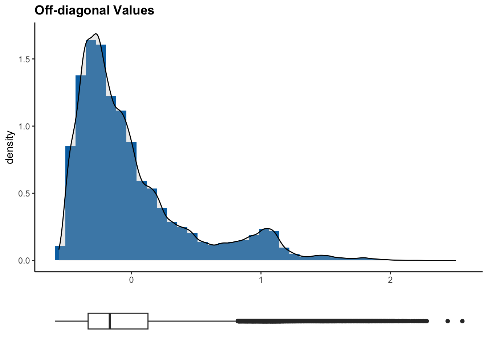

# Importing our genotypic data
raw_matrix <- read.table("data/BarleyMatrix.txt", sep = "\t", header = TRUE, row.names = 1, check.names = FALSE)14 Module 4.1: Kinship and Relatedness
Identifying relatedness between individuals is important to ensure samples are independent, as not accounting for kinship may distort posterior analyses such as GWAS or population structure. Kinship coefficients can help control confounding affects in association studies and can help infer subpopulations when studying structure. Moreover, not only may individuals be related, we can sometimes find duplicates of the same individual, which can skew posterior diversity estimates. Overall, studying kinship allows us to maintain the quality standard of our data.
14.1 Kinship
Kinship refers to the genetic relatedness between individuals, and it is a measure of how much of their genomes two individuals share due to common ancestry. Kinship is often evaluated by calculating a kinship matrix. We can use the kinshipMatrix() function from the ICARDA package to do this. This function has the option to choose the method we want to use to calculate the matrix by defining the method parameter. By default it it set to "vanRaden", but we can choose between "astle", "IBS", and "identity". We can also choose to save the matrix locally as a text file by defining the save parameter, which is set to FALSE by default.
# Filtering
matrix <- filterData(raw_matrix, call_rate = 0.9, maf = 0.01, na_ind = 0.8)
# We transpose our matrix (to have individuals as rows and makers as columns for posterior analyses)
matrix <- t(matrix)
# Calculating kinship matrix using ICARDA package
kinshipMat <- kinshipMatrix(matrix, method = "vanRaden", save = FALSE)# Generating a heatmap from our kinship matrix as an image in our working directory
kinshipHeatmap(kinshipMat, file = "output/figures/heatmap.png")14.2 Duplicates
We can use the results from our kinship matrix to identify potential duplicates within our data. The existence of duplicates in a data set can mean different things. A sample may be genotyped multiple times or accidentally re-entried as a new individual sample and it is important to identify these errors. However, we can also find cases where the samples belong to different individuals but present no genetic variation, which can hint towards inbred lines or clonal lines. Moreover, duplicates inflate sample sizes, which can give us false confidence on GWAS or other statistical analyses.
# Identifying duplicates by setting a similarity threshold and using the ICARDA package
duplicates <- kinshipDuplicates(matrix, threshold = 0.99, kinship = kinshipMat)
# Printing potential duplicates along with their kinship and correlation
duplicates$potentialDuplicates Indiv.A Indiv.B Value Corr
1 ICARDA_G1416 ICARDA_G0226 1.623916 0.9988232
2 ICARDA_G0052 ICARDA_G0043 1.784647 0.9984566
3 ICARDA_G0140 ICARDA_G0059 1.840917 0.9983279
4 ICARDA_G0110 ICARDA_G0098 1.808388 0.9982951
5 ICARDA_G0119 ICARDA_G0098 1.807323 0.9980452
6 ICARDA_G0291 ICARDA_G0217 1.622423 0.9979949
7 ICARDA_G0298 ICARDA_G0296 1.606878 0.9979506
8 ICARDA_G0258 ICARDA_G0234 1.897229 0.9979442
9 ICARDA_G1421 ICARDA_G0301 1.613681 0.9979219
10 ICARDA_G0119 ICARDA_G0110 1.805239 0.9976256
11 ICARDA_G0232 ICARDA_G0230 1.658003 0.9976119
12 ICARDA_G1418 ICARDA_G0014 1.632860 0.9971155
13 ICARDA_G0473 ICARDA_G0137 1.973008 0.9971065
14 ICARDA_G0588 ICARDA_G0097 1.918720 0.9967419
15 ICARDA_G0887 ICARDA_G0146 1.833113 0.9966084
16 ICARDA_G1420 ICARDA_G0278 1.623460 0.9957251
17 ICARDA_G0257 ICARDA_G0218 1.672619 0.9955905
18 ICARDA_G0275 ICARDA_G0259 1.590987 0.9953467
19 ICARDA_G1201 ICARDA_G0627 1.816801 0.9951241
20 ICARDA_G0301 ICARDA_G0245 1.601896 0.9947260
21 ICARDA_G1421 ICARDA_G0245 1.601728 0.9947013
22 ICARDA_G0244 ICARDA_G0234 1.884887 0.9945220
23 ICARDA_G0297 ICARDA_G0242 1.618348 0.9942201
24 ICARDA_G0814 ICARDA_G0146 1.825129 0.9938527
25 ICARDA_G1423 ICARDA_G0297 1.616111 0.9937178
26 ICARDA_G0258 ICARDA_G0244 1.879864 0.9935735
27 ICARDA_G1409 ICARDA_G0214 1.624520 0.9935612
28 ICARDA_G0889 ICARDA_G0146 1.820499 0.9934813
29 ICARDA_G0846 ICARDA_G0146 1.817510 0.9926027
30 ICARDA_G0889 ICARDA_G0887 1.816931 0.9924443
31 ICARDA_G0207 ICARDA_G0034 1.604201 0.9923286
32 ICARDA_G0501 ICARDA_G0500 1.862038 0.9923112
33 ICARDA_G0863 ICARDA_G0146 1.814894 0.9920920
34 ICARDA_G0503 ICARDA_G0498 2.504639 0.9920558
35 ICARDA_G0887 ICARDA_G0814 1.820125 0.9920372
36 ICARDA_G1383 ICARDA_G0983 1.692738 0.9916451
37 ICARDA_G0887 ICARDA_G0846 1.813754 0.9914600
38 ICARDA_G0887 ICARDA_G0863 1.811138 0.9909474
39 ICARDA_G1377 ICARDA_G0884 1.992010 0.9904147
40 ICARDA_G0795 ICARDA_G0146 1.808636 0.9903712
41 ICARDA_G1269 ICARDA_G0067 2.228613 0.9901741# Printing histograms with the distribution of diagonal and off-diagonal values
duplicates$plots[[1]]
[[2]]
If we decide we want to filter our data according to the potential duplicates we identified, we can use the kinshipFilter() function from the ICARDA package. This will give us a filtered version of our SNP matrix and kinship matrix.
filteredMatrix <- kinshipFilter(matrix, duplicates$potentialDuplicates, kinshipMat)